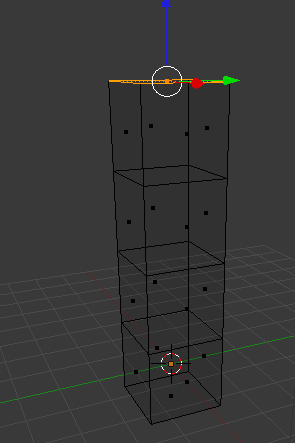
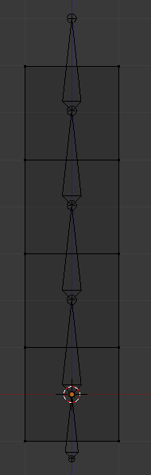
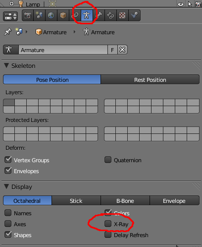
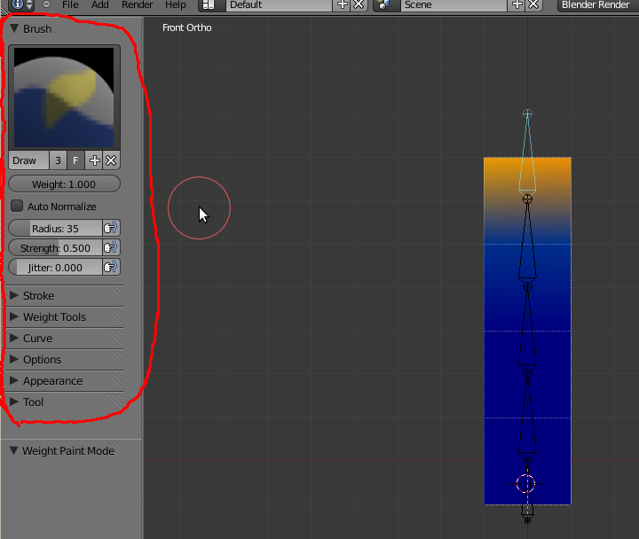
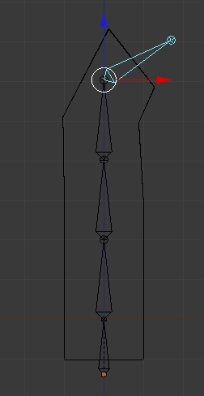
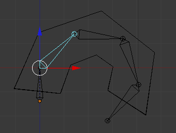
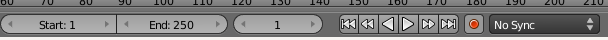
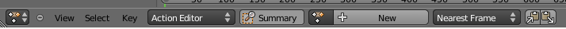
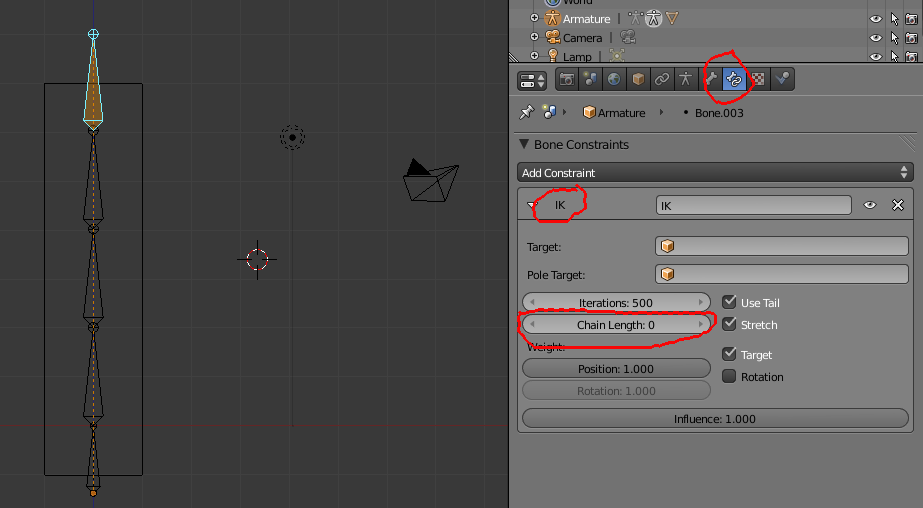

1- Partindo do cubo inicial, utilizando a Extrusão (E) e o valor 2, crie um pilar similar ao da imagem.
2- Adicione um Bone (Shift + A) e utilizando a Extrusão construa uma armadura com 5 bones similar à da imagem abaixo.
3- Para associar a mesh à armadura: seleccione primeiro a mesh, depois a armadura, clique em Ctrl + P e seleccione a opção “with Automatic Weights”.
4- Em Object Mode, seleccione a armadura. No painel Object Data da armadura, active a opção X-Ray para a armadura ser sempre visível e nunca ficar escondida ou tapada pela mesh.
Ainda neste painel, pode optar por activar outras formas de visualização dos Bones (Octahedral, Stick, B-Bone e Envelope), mostrar nomes dos Bones e respectivos eixos.
É recomendável atribuir nomes aos bones substituindo as designações automáticas (i.e. Bone, Bone.001, Bone.002, etc.). Em Pose ou Edit Mode,seleccione o Bone e no painel Bone tem acesso a uma caixa de texto onde pode renomear o Bone seleccionado.
5- Object Mode, seleccione a armadura. Active a Pose Mode. Clique na mesh e active o Weight Paint Mode. Verifique a influência de cada Bone e proceda a alterações ou correcções. No painel de ferramentas surgem diversas opções para ajudar a estar tarefa, onde pode escolher tipo de Brush, dimensão, intensidade/strength, etc.
6- Quando estiver satisfeito, seleccione a armadura e active a Pose Mode. A partir deste momento, pode animar a armadura e inserir keyframes (I) em cada Bone que pretende animar.
a) Coloque-se na frame 1
b) Seleccione o Bone do topo e insira uma keyframe (I) de tipo LocRot.
c) Avance até à frame 11 e aplique uma rotação (R) ao Bone que tem seleccionado e uma keyframe LocRot. Seleccione o segundo Bone (a contar do topo) e insira uma keyframe LocRot.
d) Avance até à frame 21 e aplique uma rotação (R) ao segundo Bone. Seleccione o terceiro Bone (a contar do topo) e insira uma keyframe LocRot. Repita o processo até ter uma forma semelhante à da imagem abaixo na frame 41.
e) Se animar (Alt+A) irá ver uma animação entre a frame 1 e a frame 41.
a) Coloque-se na frame 1. Active o botão de “Automatic Keyframes” para gravar automaticamente as keyframes necessárias sem ser necessário clicar no I.
b) Mova o primeiro Bone e volte a colocá-lo na mesma posição (na vertical)) para gravar a keyframe.
c) Avance até à frame 11 e mova o segundo Bone. Repita o processo até à keyframe 41.
d) Desligue o botão de gravação de keyframes e veja como está animação (Alt+A).
O Action Editor permite criar uma biblioteca de animações que depois podem ser conjugadas ou até activadas em simultâneo.
Escolha a janela DopeSheet e active a opção Action Editor. Já deverá ter uma animação criada com o nome “ArmatureAction”. Mude o nome da acção para “descer”
Na frame 41, clique no sinal + para criar uma nova acção com o nome “Subir”. Volte à frame 1 (utilize as setas do teclado), seleccione todos os Bones e insira uma keyframe (I) LocRot. Na janela Timeline, active o botão para gravar as keyframes automaticamente e comece a gravar keyframes de forma a que na frame 41 a suar armadura esteja na vertical.
No final, deverá ter duas acções, “descer” e “Subir”, ambas têm 41 frames, ambas começam na frame 1 e terminam na 41.
Seleccione o Bone do topo e aplique-lhe um “Bone Constraint” do tipo “Inverse Kinematics”.
Clique em G para mover o Bone e veja a diferença
Se quiser diminuir a influência do “constraint”, altere o valor da “Chain Length”. Experimente mover o Bone do topo com valor 3 para ver a diferença. Se tiver 0, a influência extende-se a todos os Bones que estejam directamente ligados, em cadeia.
Tradicionalmente, a animação é feita em modo “Forward Kinematics”. Ou seja, move primeiro o Bone da base e depois anima até à extremidade, Bone a Bone. Por outras palavras, move primeiro o antebraço, depois o braço, depois a mão.
No modo “Inverse Kinematics” é possível animar a extremidade que os restantes Bones vão recolocar-se de acordo com a posição da extremidade.
Crie mais uma animação entre a frame 1 e 41 movendo apenas o Bone do topo. Este deverá ter um “Bone Constraint” do tipo “Inverse Kinematics” e uma “Chain Length” com valor 5.